subverge
subvergeTour
Subverge 0.8.0 in QEMU.
First boot
The live ISO's welcome screen. See startup to change it.

The sys screen.
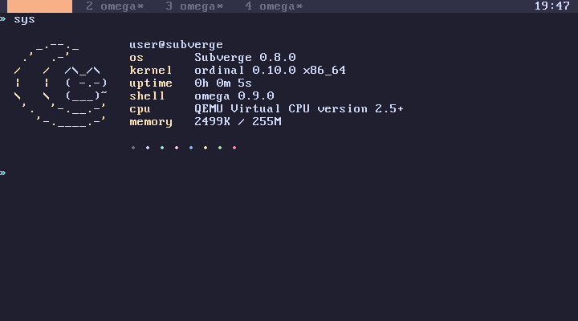
Installing
Read installation before you copy any of this.
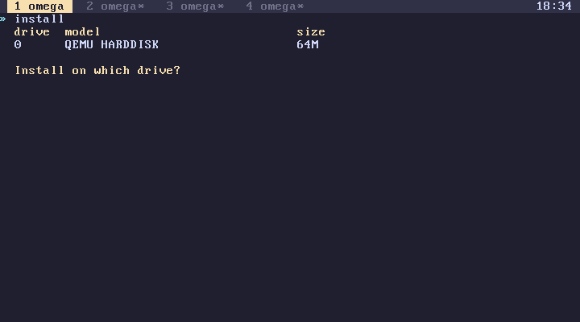
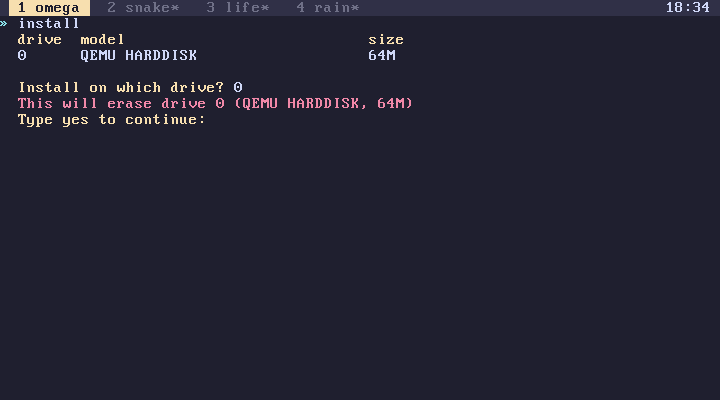
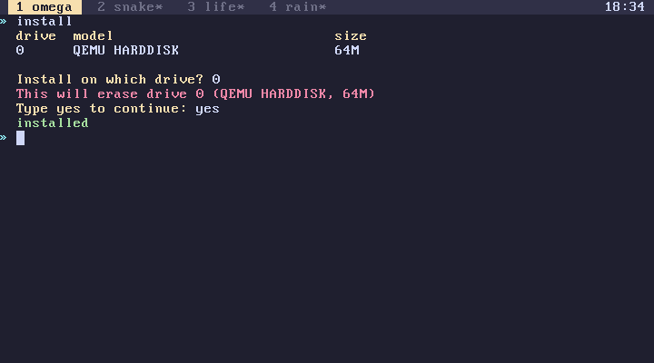
The installed disk booting with Subverge's own bootloader, and a word defined before the reboot still there after it (saving).
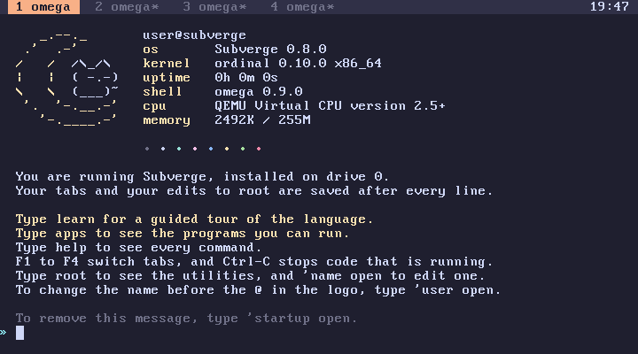
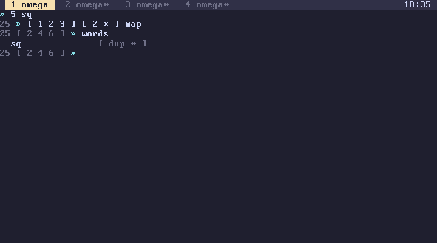
Help
help, 'group help and 'word help. See help.


The memory group (omega for smarties) and the infinity group (ordinals).
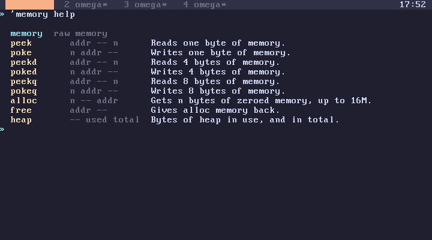
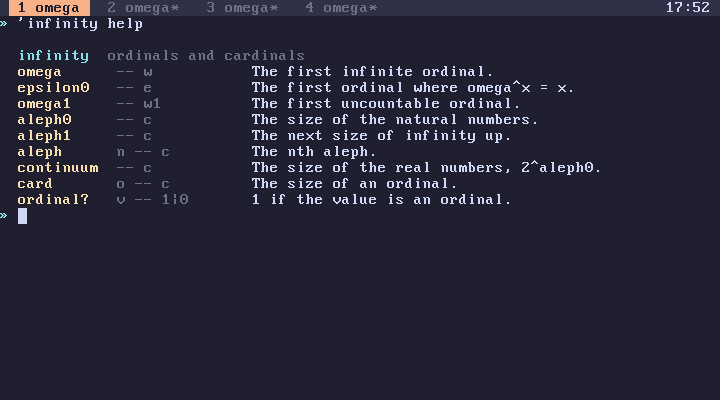
learn
See learn.
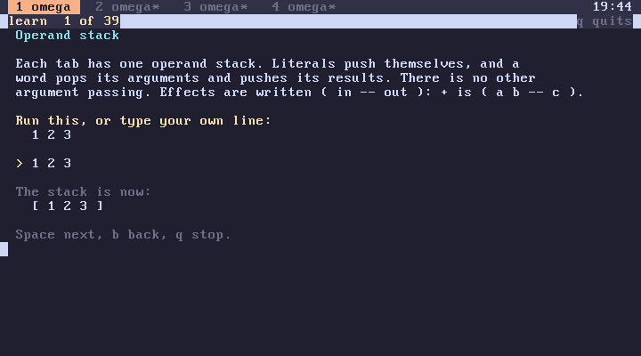

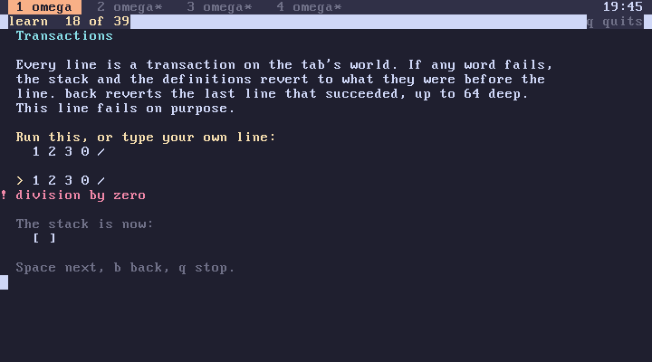
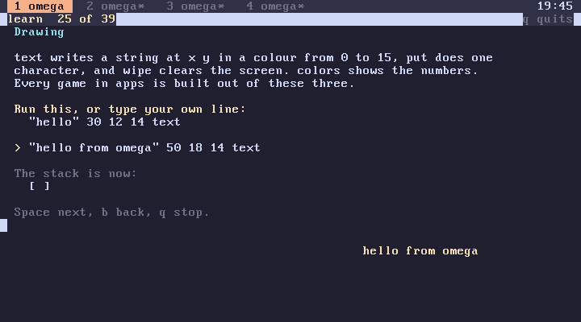
The language
Ordinals, and a failing line leaving nothing behind (transactions).

Deliberate errors, including the one where set theory gives up. See errors.


see and words. See names.

stats, heap, kernel, uptime and disks. See memory.

Big numbers (numbers), and fortune and bases.
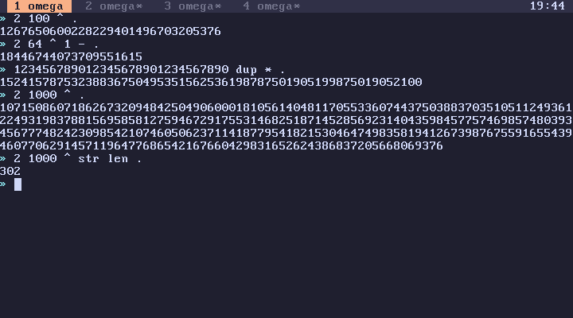
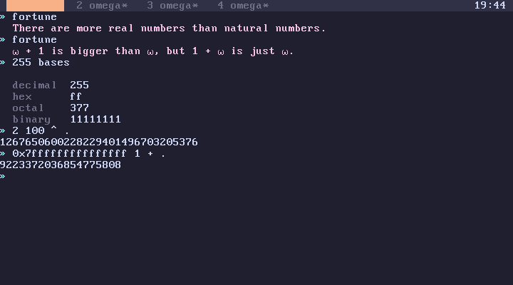
Tools
See tools.


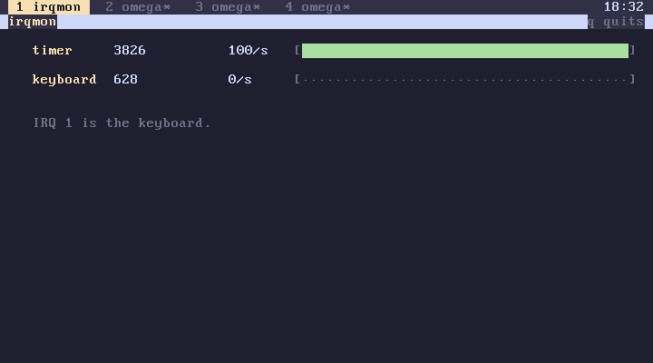


Tabs
Four tabs running at once.


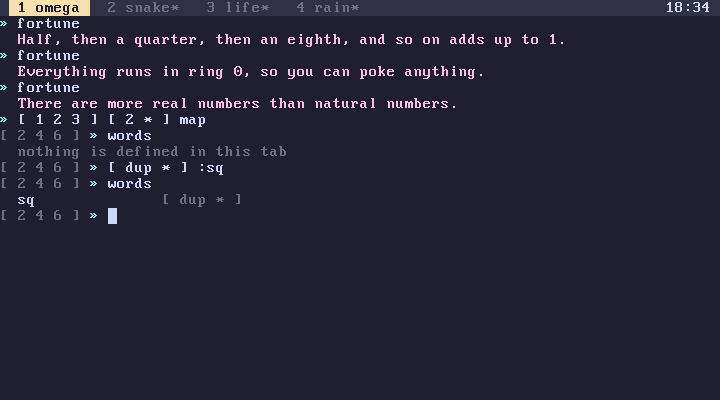
Infinity
See demos.


Root
root, editing a unit in scrawl, and a new unit. See root.


JIT
xray and bench. See JIT.


Mandelbrot
mandel, its source, and the JIT working on it.


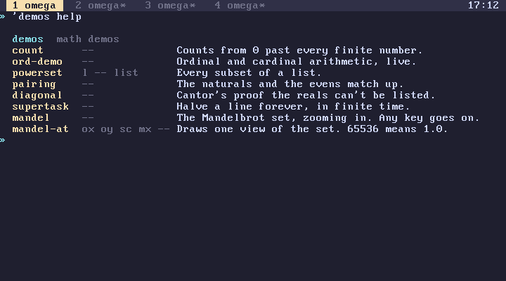
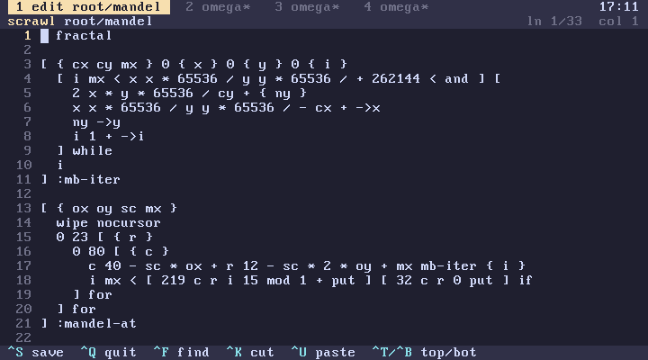

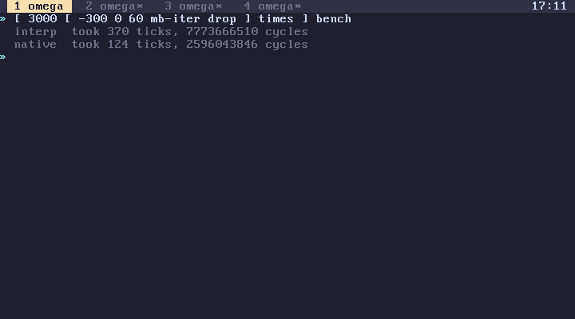
Apps
apps, the programs from games, and adding one to the list (apps).

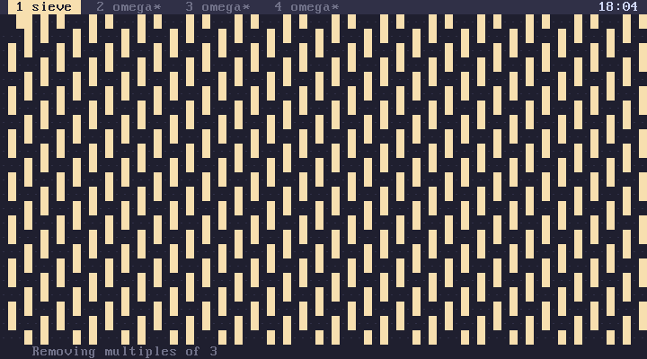

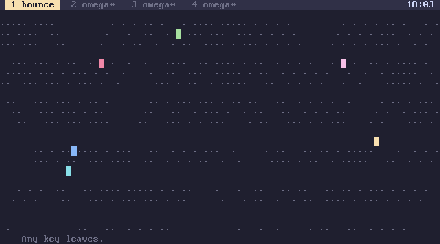

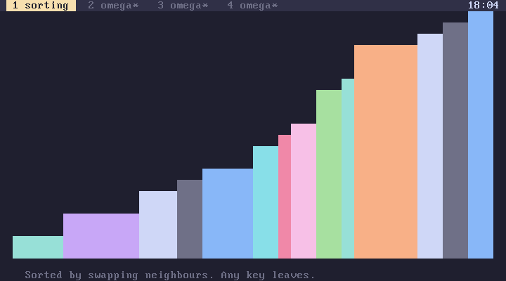
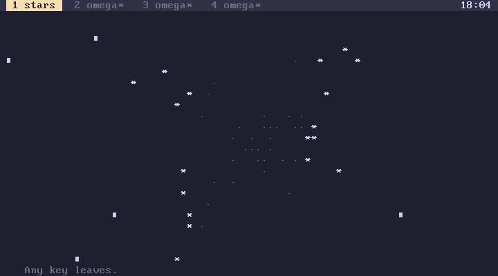